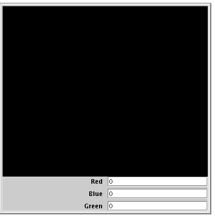
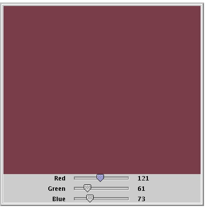

For this lab, you should match up with a new partner (not one that you have had previously). You are to do pair programming as you did in the past, where one person will sit at the keyboard and the other will sit at the desk next to the keyboard person. The person working at the desk will be responsible for doing things like drawing diagrams, suggesting ideas for solving the problem, and watching as the keyboard person enters the program. Both programmers should take part in designing the program and should continuously interact as the programming is done. In the next lab, the same partners will work together but they will change places.
Write a class called ColorBox that extends FrameWindowController
and initially draws a white FilledRect
that covers the entire canvas. Your program should include three JTextField components that will take
values for the Red, Green and Blue values and change the color of the box
accordingly when the Enter button is hit on any text field. Each JTextField must have a JLabel to its left describing what
color it expects (i.e., Red, Blue or Green). You need to use a JPanel with GridLayout to hold 3 rows and 2 columns. Its execution
should look similar to that below. Your program should only accept color
values between 0 and 255 (otherwise, display an error message in the console).
Initialize the JTextFields to
255 and place an introductory instruction message on the canvas to inform users
that they can enter values from 0 to 255 in the fields to change the color of
the box.
Note that values stored in JTextFields are considered Strings (i.e. ASCII values) in java
and thus can’t be used as number even if they are. To rectify this, we have to convert
them to numbers manually as shown below (assume red is a variable of type int used to store the red color
intensity typed by the user in JTextField RedTxt)
int red =
Integer.parseInt(RedTxt.getText());

Modify your program (remember to rename it so you save your original) to use
3 JSliders instead of the JTextFields. Your window should
now look something like the window below.

There are two classes in this folder: Calculator.java and RunCalculator.java. Open RunCalculator.java in DrJava and compile it. It looks as follows:
public class RunCalculator {
public static void main(String [] args) {
new Calculator();
}}
Note that the method main has a single command - the same command that we always use to start our DrJava programs - to run the constructor for the object we wish to create. The purpose of the main method is to do EXACTLY that (i.e., duplicate that creation we do in DrJava).
To run this program outside of DrJava, open a terminal window, change into the CS161/Lab11 directory, and type
java RunCalculator
This should cause the program to run.
Now go one step further. Open a new empty file in DrJava, and then type in the line
java RunCalculator
Next, save the file with the name Calculator.cmd to the same directory. Using your terminal window and staying in the ~/CS161/Lab11 directory, type
chmod +x Calculator.cmd
which causes the file Calculator.cmd to become what we call a script file (+x means add eXecute permissions to users). Test that it works as a new Linux command by typing ./Calculator.cmd. It should run your program again.When you have the lab working correctly, create a new folder inside your Lab11 folder and give it a name similar in format to MillerJohnLab11 only using your name. Copy all Java files from your Lab11 folder and put them in the newly created folder (but keep the old copies in their place as back up). If you are not finished during lab time, finish the assignment prior to coming to the next lab and put a copy of your newly renamed folder into the /usr/people/handins/161LabHandin folder before the start of the next lab period. You can use the cp command or copy and paste to hand in your work.